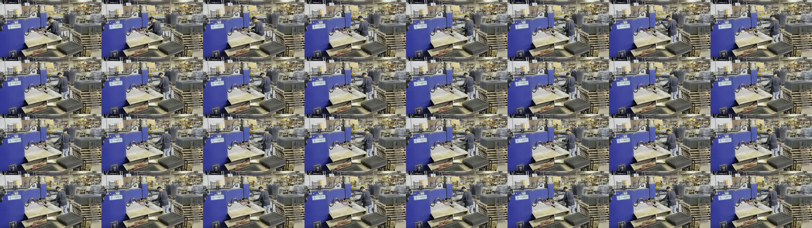
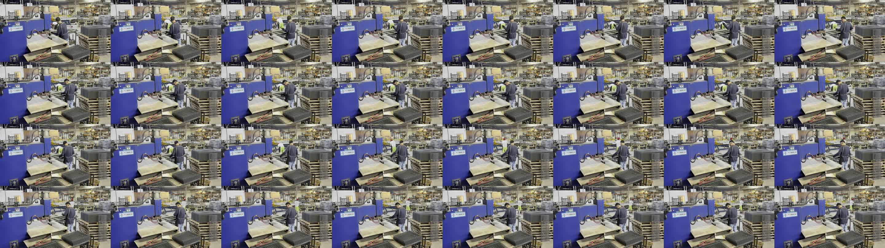
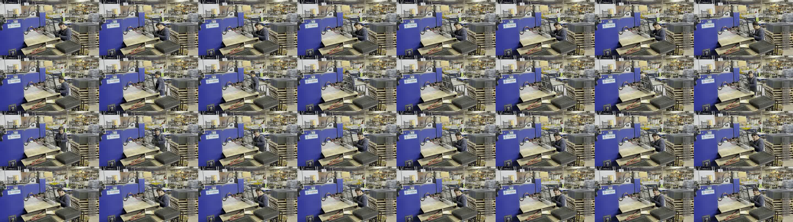
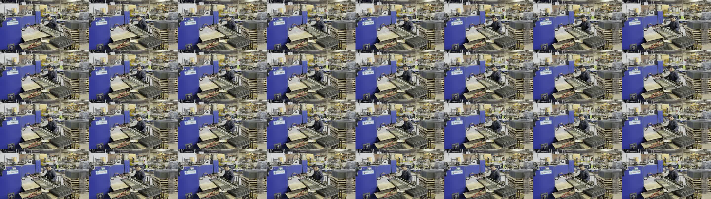

real_factory Runtime Count 4 Review
Each image below is a 16-second contact sheet around one runtime count. The count fires after the physical placement when the track finalizes, so judge whether the count corresponds to a real placement, not whether the timestamp is the exact touch-down moment.
Answer needed: for each event, yes / no / corrected approximate placement time.
Event 1: runtime count at 470.612s

Yes / no / corrected time?
Event 2: runtime count at 1038.194s

Yes / no / corrected time?
Event 3: runtime count at 1421.604s

Yes / no / corrected time?
Event 4: runtime count at 1564.208s

Yes / no / corrected time?